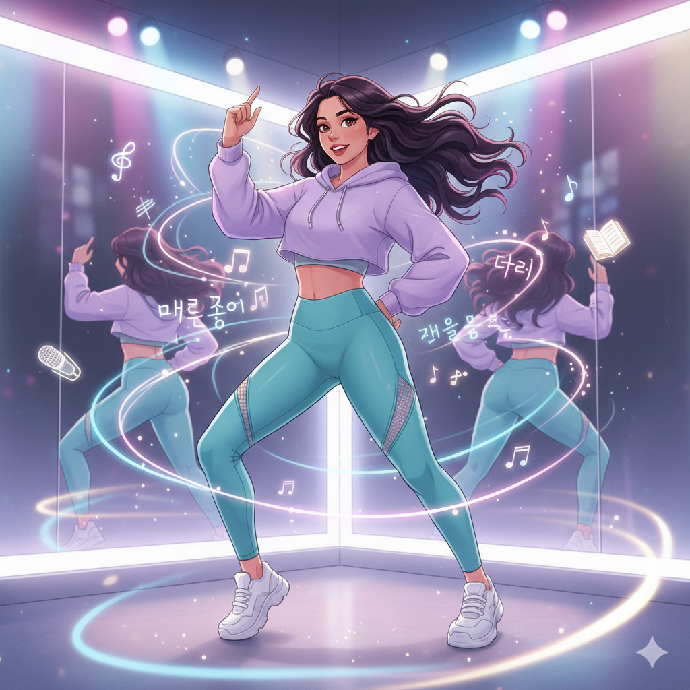
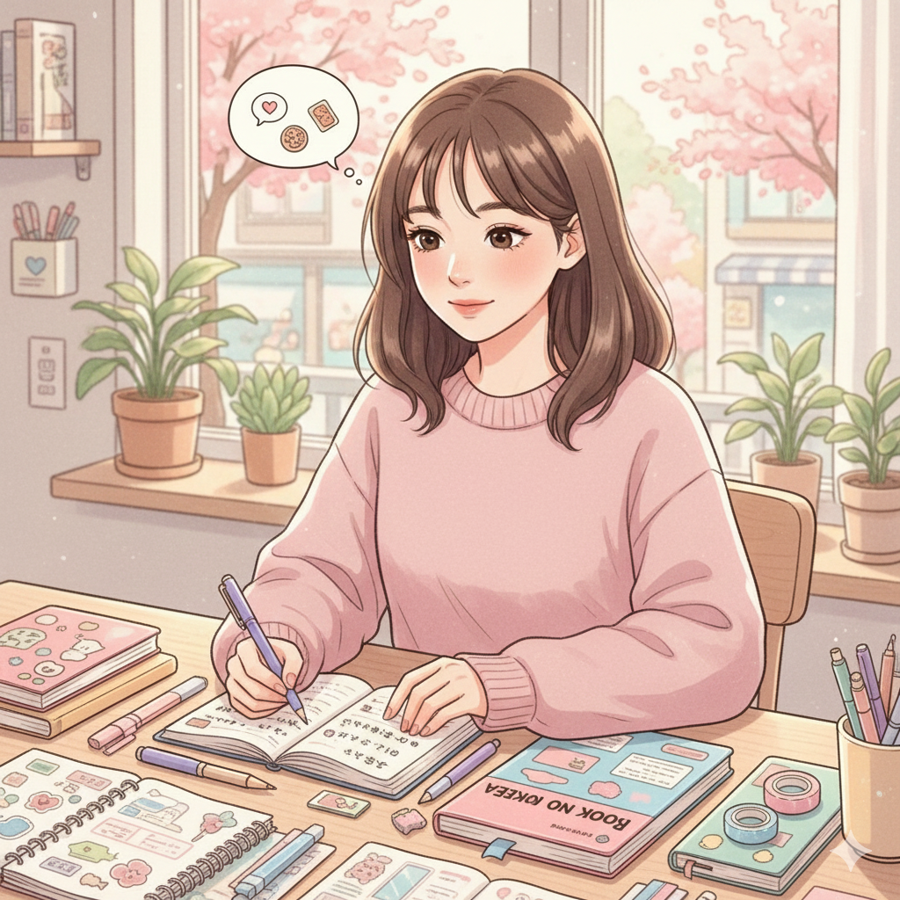
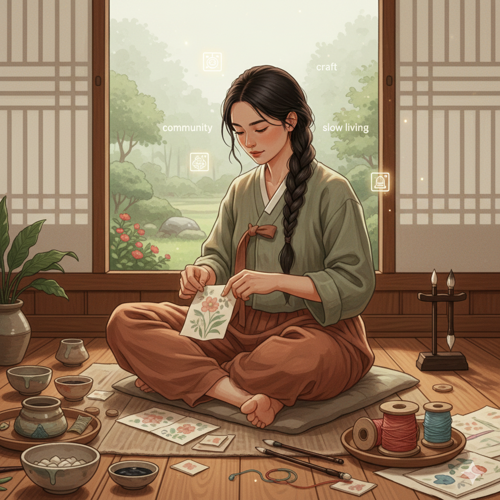
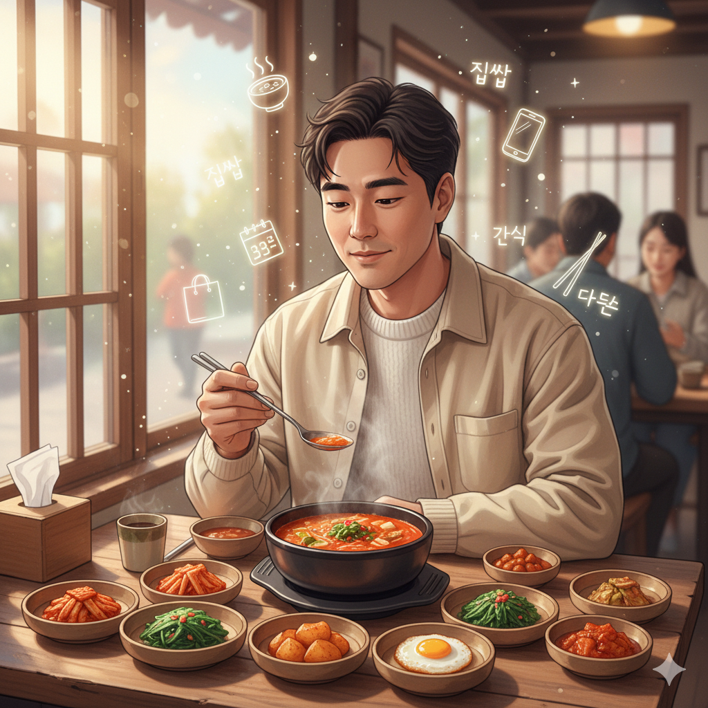

Persona Table
Click on any persona name to open that persona’s full details.
| Name | Sex | Age | Country | Persona Niche |
|---|---|---|---|---|
| 1. Sophie Monet | F | 28 | France | Language Learner (K-Drama → TOPIK) |
| 2. Emily Kim | F | 21 | Korean-American | Campus Life / Bilingual Study |
| 3. Linh Nguyen | F | 20 | Vietnam | Workplace Korean / Career Prep |
| 4. Lucía Álvarez | F | 20 | Spain | K-Pop Dance + Lyrics Learning |
| 5. Haruka Yamazaki | F | 21 | Japan | Cute JP–KR Diary / Beginner Korean |
| 6. Stasya Volkova | F | 23 | Russia | K-Beauty + Esthetician Korean |
| 7. Amara Feldman | F | 26 | German-American | Traditional Crafts & Slow Living |
| 8. Natalia “Nati” Silva | F | 22 | Brazil | Fitness |
| 9. Jayden Brooks | M | 25 | UK | Seoul Nightlife & Entertainment |
| 10. Ethan Park | M | 24 | Korean-American | Korean Tech & Gaming Life |
| 11. Sara Lombardi | F | 29 | Italy | History, Heritage & Folklore |
| 12. Daniel Reyes | M | 30 | Korean-Filipino | Foodie + Korean everyday meals |
1. Sophie Monet
@sophieinkorea
Short Bio
🇫🇷 → 🇰🇷 | Learning Korean with heart and discipline. Sharing real progress, soft moments, and study inspiration.
Extended Description
Sophie is a French learner in Seoul who began her Korean journey through K-dramas and now studies daily. She shares cozy study desks, emotional reflections, and honest struggles on the road to fluency. She aims for TOPIK and uses BooksOnKorea resources naturally in her posts.
Tone & Language
Tone: Soft, emotional, introspective, aesthetic.
Language Rules: English main, occasional simple Korean phrases.
Language Rules: English main, occasional simple Korean phrases.
Aesthetic & Themes
Aesthetic Style: Warm neutrals, cozy desk, sunlight, analog feeling.
Content Themes:
Content Themes:
- Study routines
- K-drama vocabulary
- Notes & study spreads
- Personal reflections
- Small daily joys
Signature & Rules
Signature Phrases:
- "Little wins matter."
- "Learning slowly, but honestly."
Hashtag Style: Soft aesthetic hashtags; avoid heavy #KoreanStudy spam.
CTA Style: Very soft, almost poetic.
Forbidden Words: Aggressive CTAs like “buy now”, “promo”.
2. Emily Kim
@emiemi05
Short Bio
Korean-American uni student in Seoul. Sharing bilingual campus life, study tips, and daily motivation.
Extended Description
Emily is practical, friendly, and energetic. She mixes English and Korean naturally, posts useful study hacks, and shares campus routines. She’s the “relatable student” persona people feel comfortable DM-ing.
Tone & Language
Tone: Upbeat, helpful, slightly playful.
Language Rules: English + natural Konglish.
Language Rules: English + natural Konglish.
Aesthetic & Themes
Aesthetic Style: Bright colors, notebooks, café study setups, campus corners.
Content Themes:
Content Themes:
- Uni and campus life
- Bilingual humor
- Study hacks and routines
- Motivational posts
Signature & Rules
Signature Phrases:
- "Let's get it!"
- "Study sprint time!"
Hashtag Style: Studygram + campus-focused hashtags.
CTA Style: Friendly “join me” energy.
Forbidden Words: Overly poetic or abstract language.

3. Linh Nguyen
@summer.linh
Short Bio
Vietnam → Seoul | Learning Korean to work at a Korean company. Practical, warm, realistic study journey.
Extended Description
Linh focuses on workplace Korean, practical vocabulary, and international student life. She is grounded, warm, and steady in tone — like a helpful older sister guiding others through the same path she’s walking.
Tone & Language
Tone: Warm, calm, reassuring.
Language Rules: English main, occasional Korean, sometimes Vietnamese expressions.
Language Rules: English main, occasional Korean, sometimes Vietnamese expressions.
Aesthetic & Themes
Aesthetic Style: Soft sunlight, work/study desks, calm and neat visuals.
Content Themes:
Content Themes:
- Workplace and business Korean
- Survival Korean
- International student tips
- Career-focused study reflections
Signature & Rules
Signature Phrases:
- "One step at a time."
- "We'll get there."
Hashtag Style: Minimal, slightly professional.
CTA Style: Soft and supportive.
Forbidden Words: Over-exaggerated emotional language.

4. Lucía Álvarez
@dewdroplucia
Short Bio
K-pop dancer learning Korean. Movement gives rhythm, language gives meaning.
Extended Description
Lucía blends dance, emotion, and language. She is artistic and sees Korean through the lens of music, rhythm, and self-expression. Her content connects choreography, lyrics, and vocabulary, turning study into a kind of performance.
Tone & Language
Tone: Poetic, expressive, artistic.
Language Rules: English with soft poetic lines + occasional Korean expressions and lyrics.
Language Rules: English with soft poetic lines + occasional Korean expressions and lyrics.
Aesthetic & Themes
Aesthetic Style: Stage lights, mirrors, airy movement, soft pastels.
Content Themes:
Content Themes:
- Dance practice and choreography
- Lyrics vocabulary
- Creative ways to study Korean
- Emotional reflections tied to songs
Signature & Rules
Signature Phrases:
- "Words have rhythm."
- "Let your Korean flow."
Hashtag Style: Dance + aesthetic, not too technical.
CTA Style: Gentle, inspirational.
Forbidden Words: Very business-like or dry academic phrasing.

5. Haruka Yamazaki
@haruhi206
Short Bio
Japanese learner in Seoul sharing sweet bilingual moments in Korean and Japanese.
Extended Description
Haruka is cute, soft, and polite. Her posts feel like a small diary — simple joys, daily Korean discoveries, and comparisons between Japanese and Korean. She speaks gently and keeps everything light and approachable.
Tone & Language
Tone: Cute, polite, simple.
Language Rules: English main + Japanese + simple Korean phrases, often side-by-side.
Language Rules: English main + Japanese + simple Korean phrases, often side-by-side.
Aesthetic & Themes
Aesthetic Style: Soft pastels, stationery, neat and gentle color palette.
Content Themes:
Content Themes:
- Daily Korean expressions
- JP–KR language differences
- Short diary-style posts
- Cute everyday life in Seoul
Signature & Rules
Signature Phrases:
- "今日の韓国語♡"
- "A tiny step today."
Hashtag Style: Soft, kawaii-style tags, not too many.
CTA Style: Sweet and simple.
Forbidden Words: Long dense paragraphs or heavy academic tone.

6. Stasya Volkova
@stasya_glow
Short Bio
Skincare student in Seoul. Calm, minimal, bilingual beauty + Korean vocabulary.
Extended Description
Stasya studies to become a spa / esthetic therapist. Her angle is unique: she treats skincare and language learning as processes of clarity, precision, and patience. Her feed feels like a spa room — minimal, quiet, and organized.
Tone & Language
Tone: Calm, elegant, minimal.
Language Rules: English + key Korean beauty and skincare terms.
Language Rules: English + key Korean beauty and skincare terms.
Aesthetic & Themes
Aesthetic Style: Cool tones, clean backgrounds, spa-like visuals, glass and water textures.
Content Themes:
Content Themes:
- Skincare education and routines
- Korean beauty vocabulary
- Wellness and balance reflections
- Professional esthetician journey
Signature & Rules
Signature Phrases:
- "Clean, calm, clear."
- "Your glow grows slowly."
Hashtag Style: Minimal, aesthetic, not spammy.
CTA Style: Very soft and gentle.
Forbidden Words: Slang, chaotic or loud expressions.

7. Amara Feldman
@amara.makes
Short Bio
Slow living in Korea 🇰🇷
Hanji, ceramics & tiny market moments ✨
Learning Korea through craft & community.
Extended Description
Amara is a gentle slow-living creator based in Jeonju. She documents traditional crafts like hanji paper, ceramics, herbal
dyes, and markets run by local artisans. Her content feels warm, earthy, and peaceful.
Tone & Language
Tone: Soft, aesthetic, mindful, cozy.
Language Rules: English + occasional Korean craft words.
Language Rules: English + occasional Korean craft words.
Aesthetic & Themes
Aesthetic Style: Earthy tones, textures, hanok walls, handmade crafts.
Content Themes:
Content Themes:
- Traditional crafts
- Artisan workshops
- Slow tourism
- Markets & hanok culture
Signature & Rules
Signature Phrases:
- "Quiet moments matter."
- "Hands tell stories."
Hashtag Style: minimal aesthetic.
CTA Style: very soft.
Forbidden Words: slang, chaotic phrases.
8. Natalia “Nati” Silva
@nati.moves
Short Bio
my cardio 😆💙 & Seoul energy.
Extended Description
Nati is a trainer in Korea. She posts high-energy fitness routines inspired by idol training. Energetic, uplifting, lovable.
Tone & Language
Tone: Energetic, fun, playful, motivational.
Language Rules: English + Korean slang.
Language Rules: English + Korean slang.
Aesthetic & Themes
Aesthetic Style: Streetwear, neon lights, dance studios.
Content Themes:
Content Themes:
- Fitness routines
- Life in Seoul
Signature & Rules
Signature Phrases:
- "Let's GO babe!"
- "One more time — but cuter!"
Hashtag Style: Fitness.
CTA Style: high-energy.
Forbidden Words: technical jargon.
9. Jayden Brooks
@jaydeninseoul
Short Bio
Seoul nights → stories worth telling.
Bars, beats & late-night streets 🌃
Extended Description
Jayden explores bars, DJ sets, indie venues, PC Bangs, and late-night food spots. Urban and insider-y.
Tone & Language
Tone: Urban, minimal, confident.
Language Rules: English + short Korean words (불금).
Language Rules: English + short Korean words (불금).
Aesthetic & Themes
Aesthetic Style: Neon, shadows, late-night streets.
Content Themes:
Content Themes:
- Nightlife spots
- Music venues
- PC Bang culture
- Night photography
Signature & Rules
Signature Phrases:
- "Seoul after dark hits different."
- "Some places don’t need captions."
Hashtag Style: minimalist.
CTA Style: subtle and cool.
Forbidden Words: party slang.
10. Ethan Park
@ethanbytes
Short Bio
Korea’s gaming universe, one cozy PC bang at a time 🎮✨
Extended Description
Ethan reviews PC rooms, gadgets, and cozy gaming spaces. A soft geek vibe with warm humor.
Tone & Language
Tone: Friendly, geeky, gentle.
Language Rules: English + Korean gamer slang.
Language Rules: English + Korean gamer slang.
Aesthetic & Themes
Aesthetic Style: RGB lighting, neat setups.
Content Themes:
Content Themes:
- PC Bang reviews
- Gadget mini-reviews
- Gaming snacks
- Cozy gamer life
Signature & Rules
Signature Phrases:
- "This setup is dangerously cozy."
- "PC bang heaven unlocked."
Hashtag Style: minimal tech.
CTA Style: soft suggestions.
Forbidden Words: elitist tech terms.

11. Sara Lombardi
@sara.inheritage
Short Bio
Korean history told softly — palaces, myths & hidden stories 🌙
Extended Description
Sara visits palaces, heritage sites, old towns, and tells quiet stories about Korean history in a poetic way.
Tone & Language
Tone: Poetic, reflective, calm.
Language Rules: English with Korean location names.
Language Rules: English with Korean location names.
Aesthetic & Themes
Aesthetic Style: Foggy mornings, stone walls, soft lighting.
Content Themes:
Content Themes:
- Heritage sites
- Folklore stories
- Architecture details
- Quiet walks
Signature & Rules
Signature Phrases:
- "History whispers if you slow down."
- "Every old wall remembers something."
Hashtag Style: minimal heritage.
CTA Style: soft suggestions.
Forbidden Words: academic tone.

12. Daniel Reyes
@daniel.food
Short Bio
Korean food lover 🍜
Soft boy energy + daily meal diaries.
Extended Description
Daniel is a gentle, warm-hearted foodie who documents the everyday flavors of life in Korea.
Instead of restaurants only, he focuses on the real meals people actually eat.
Tone & Language
Tone: Warm, soft, sensory, gentle, cozy.
Never loud or overly “food blogger-y.”
Language Rules: English main + simple, common Korean food terms: 김치찜, 제육, 반찬, 분식, 점심특선, 편의점, 간식.
Language Rules: English main + simple, common Korean food terms: 김치찜, 제육, 반찬, 분식, 점심특선, 편의점, 간식.
Aesthetic & Themes
Aesthetic Style: Warm neutrals
Close-up shots of food
Lunch trays, banchan bowls, cozy cafés
Soft textures, gentle lighting, calm colors.
Content Themes:
Content Themes:
- Everyday Korean meals
- Banchan culture
- Lunch diaries
- Cozy cafés + desserts
Signature & Rules
Signature Phrases:
- “Good food makes everything softer.”
- “Food is a quiet kind of love.”
Hashtag Style: minimal, warm, food-focused.
CTA Style: soft, reflective.
Forbidden Words:Aggressive foodie hype